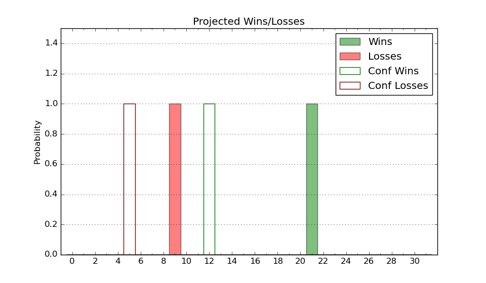

| Home | Game Probabilities | Conferences | Preseason Predictions | Odds Charts | NCAA Tournament |
| City: | St. Bonaventure, New York | |
| Conference: | Atlantic 10 (4th)
| |
| Record: | 12-5 (Conf) 21-9 (Overall) | |
| Ratings: | Comp.: 11.0 (83rd) Net: 11.0 (83rd) Off: 107.7 (75th) Def: 96.7 (86th) SoR: 52.0 (57th) |
| Remaining | ||||||
|---|---|---|---|---|---|---|
| Date | Opponent | Win Prob | Pred. | |||
| 3/20 | @ Oklahoma (28) | 21.4% | L 62-70 | |||
| Previous | Game Score | |||||
| Date | Opponent | Win Prob | Result | Off | Def | Net |
| 11/9 | Siena (240) | 91.3% | W 75-47 | 6.6 | 11.7 | 18.3 |
| 11/14 | Canisius (264) | 92.9% | W 69-60 | -19.2 | 3.7 | -15.6 |
| 11/18 | (N) Boise St. (32) | 35.4% | W 67-61 | 14.2 | 6.9 | 21.2 |
| 11/19 | (N) Clemson (79) | 49.2% | W 68-65 | 6.1 | 0.8 | 6.9 |
| 11/21 | (N) Marquette (50) | 40.4% | W 70-54 | -1.5 | 30.9 | 29.4 |
| 11/27 | Northern Iowa (99) | 71.6% | L 80-90 | 1.0 | -22.3 | -21.3 |
| 12/1 | Coppin St. (302) | 95.0% | W 93-81 | 14.3 | -25.0 | -10.6 |
| 12/4 | Buffalo (119) | 77.1% | W 68-65 | -16.7 | 8.3 | -8.4 |
| 12/8 | Loyola MD (256) | 92.5% | W 84-71 | 21.6 | -24.3 | -2.6 |
| 12/11 | (N) Connecticut (16) | 23.8% | L 64-74 | -3.2 | 1.6 | -1.7 |
| 12/17 | (N) Virginia Tech (22) | 29.8% | L 49-86 | -30.6 | -23.5 | -54.1 |
| 1/11 | @La Salle (232) | 73.5% | W 80-76 | 1.6 | -1.0 | 0.6 |
| 1/14 | VCU (58) | 58.4% | W 73-53 | 15.1 | 11.4 | 26.5 |
| 1/18 | @Dayton (61) | 29.9% | L 50-68 | -11.1 | -9.8 | -20.9 |
| 1/21 | @Duquesne (276) | 81.1% | W 64-56 | 3.7 | 2.0 | 5.7 |
| 1/26 | @George Mason (107) | 45.6% | L 66-75 | 2.1 | -15.8 | -13.7 |
| 1/29 | Saint Joseph's (190) | 86.6% | W 80-69 | 5.9 | -6.6 | -0.7 |
| 2/1 | Davidson (44) | 53.8% | L 76-81 | -0.7 | -15.5 | -16.2 |
| 2/4 | @Richmond (92) | 38.5% | L 61-71 | -5.3 | -8.7 | -14.0 |
| 2/8 | Fordham (171) | 84.7% | W 76-51 | 2.7 | 11.4 | 14.1 |
| 2/11 | @Saint Louis (66) | 31.7% | W 68-61 | 4.0 | 24.2 | 28.2 |
| 2/14 | Saint Louis (66) | 61.3% | W 83-79 | 17.2 | -13.6 | 3.6 |
| 2/16 | Massachusetts (175) | 85.4% | W 83-71 | 2.7 | 0.7 | 3.3 |
| 2/19 | Duquesne (276) | 93.6% | W 81-55 | 4.1 | 6.7 | 10.7 |
| 2/22 | Rhode Island (136) | 80.1% | W 73-55 | -1.2 | 8.1 | 6.9 |
| 2/26 | @Saint Joseph's (190) | 65.4% | W 54-52 | -21.4 | 20.7 | -0.7 |
| 3/1 | @VCU (58) | 29.2% | L 51-74 | -20.4 | -1.8 | -22.2 |
| 3/4 | Richmond (92) | 68.0% | W 72-65 | 7.6 | -1.6 | 5.9 |
| 3/11 | (N) Saint Louis (66) | 46.1% | L 56-57 | -16.2 | 14.9 | -1.3 |
| 3/15 | @Colorado (81) | 34.9% | W 76-68 | 19.4 | -0.3 | 19.1 |
| Stats & Trends | |||||
|---|---|---|---|---|---|
| Current | Day | Week | Month | Season | |
| Composite | 11.0 | +0.7 | +0.8 | +1.1 | -11.2 |
| Comp Rank | 83 | +4 | +5 | +4 | -59 |
| Net Efficiency | 11.0 | +0.7 | +0.8 | +1.6 | -- |
| Net Rank | 83 | +4 | +5 | +9 | -- |
| Off Efficiency | 107.7 | +0.7 | +0.2 | -2.0 | -- |
| Off Rank | 75 | +8 | +2 | -12 | -- |
| Def Efficiency | 96.7 | +0.0 | +0.6 | +3.6 | -- |
| Def Rank | 86 | -- | +6 | +49 | -- |
| SoS Rank | 97 | +5 | +7 | -21 | -- |
| Exp. Wins | 21.0 | +1.0 | +1.0 | +2.4 | -1.2 |
| Exp. Conf Wins | 12.0 | -- | -- | +1.4 | -1.2 |
| Conf Champ Prob | 0.0 | -- | -- | -0.3 | -38.2 |

| Advanced Stats | ||
|---|---|---|
| Stat | Value | Rank |
| Off Eff FG % | 0.522 | 98 |
| Off Ast Ratio | 0.164 | 47 |
| Off ORB% | 0.272 | 138 |
| Off TO Rate | 0.131 | 32 |
| Off FT Ratio | 0.289 | 225 |
| Def Eff FG % | 0.487 | 129 |
| Def Ast Ratio | 0.151 | 245 |
| Def ORB% | 0.242 | 102 |
| Def TO Rate | 0.168 | 93 |
| Def FT Ratio | 0.223 | 19 |